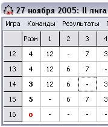

| Ввод ответов команд | версия 0.3, от 19 января 2006 г. |
|
Введение Основные термины Работа с командами Ввод ответов Подсчет результатов Сохранение игры Параметры программы Лицензионные условия Авторы Благодарности |
Вопросы игрыИгра интеллектуального марафона состоит из нескольких вопросов. Чтобы ввести данные о правильности ответов команд, программе необходимо знать их количество. Изменить его можно, выбрав пункт "Количество вопросов..." (Ctrl+E) меню "Игра". В появившемся окне будет отражено текущее количество вопросов. Вам остается изменить это число и нажать "ОК". О наличии раунда разминки говорит галочка напротив одноименного пункта меню "Игра". Чтобы отменить наличие разминки просто щелкните на этом пункте меню или нажмите Ctrl+R. Ввод ответов командПри добавлении новых вопросов или при добавлении раунда разминки столбцы с ответами команд пусты. В разминке для каждой команды в столбце раунда разминки (обычно первом) необходимо выделить редактируемую ячейку и просто ввести количество правильных ответов команды. Если введенный текст является числом, оно будет выделено черным полужирным шрифтом. В противном случае цвет текста станет красным. В остальных вопросах для ввода ответов команд надо отмечать щелчками мыши правильно (или неправильно, в зависимости от параметра "Помечать правильные/неправильные") ответивших на прозвучавший вопрос. Просто выделите ячейку на пересечении строки, соответствующей столику команды и столбца вопроса. Вместо щелчка мышки можно, выделив нужную ячейку с помощью клавиш управления курсором, нажать пробел. Можно включить параметр "Помечать после перехода", если выключен параметр "Переходить к вопросу #1". Тогда, после ввода номера команды, кроме перехода ответ команды на выделенный вопрос будет изменен в соответствии с предыдущим абзацем. Замечание: По многолетнему опыту советуем Вам отмечать правильные ответы команд, так как при вводе неправильных ответов может произойти ситуация, что команда, не сдавшая ответ, будет засчитана как ответившая правильно. Начиная с версии 0.3 программа работает со сканером. Если в столбце вопроса еще не было отметок об ответах команд, столбец пустует. Как только будет введен первый ответ, остальные помечаются как неправильные (или правильные, в зависимости от настроек). Чтобы исправить ошибочный ввод ответа, нужно повторно щелкнуть на ячейке, соответствующей вопросу и команде. Такие изменения можно совершать любое количество раз. Если нужно заново ввести ответы на вопрос, или "снять" некорректный вопрос, можно воспользоваться пунктом "Аннулировать вопрос" в меню "Игра". После выбора номера вопроса, его столбец снова будет пустым. По умолчанию вместо правильных ответов у команд в ячейках отображается рейтинг вопроса. Но возможно и простое отображение "-", если ответ неверен и "+", если ответ верен. Подробнее о параметрах программы читайте здесь. |